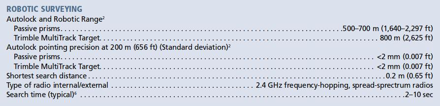

Probability and Statistics in Civil Engineering
Lecture #1 - 4 Sep 2018
Who am I?
Course Logistics
Office Hours
Wed 9:30-12, 18C Marston Hall
(or by arrangement, kandread@umass.edu)
Textbook
Probability Concepts in Engineering: Emphasis on Applications to Civil and Environmental Engineering
Homework
Problems will be assigned but do not need to be turned in
- Moodle
- Lectures and Notes
- Homework problems
- Quiz and Exam solutions
Disability Statement
Academic Honesty Policy Statement
Grading
| Midterms (20% each) | 40% |
|---|---|
| Quizzes | 30% |
| Final Exam | 30% |
| 100% |
- Best 8/10 of quizzes will be considered
- Final will cover material from entire semester
Course Objectives
- Understand fundamental concepts of probability.
- Identify, apply and evaluate the proper probability model.
- Use statistical methods to make inferences from data.
- Perform regression analysis, hypothesis testing, confidence interval calculations.
- Develop computational methods to quantify uncertainty.
- Acquire basic understanding of Sampling Statistics and Bayesian Inference.
Topics
- Week 1: Introduction, Uncertainty in Engineering Design
- Week 2: Fundamentals of Probability Models
- Week 3: Probability Distributions
- Week 4: Functions of Random Variables
- Week 5: Simulation Methods in Probability
- Week 6: Midterm #1
- Week 7: Statistical Inference
- Week 8: Fitting Probability Models
- Week 9: Regression and Correlation Analyses
- Week 10: Regression and its Applications
- Week 11: Midterm #2
- Week 12: Thanksgiving Break
- Week 13: Bayesian Inference
- Week 14: Quality Assurance and Acceptance Sampling
- Week 15: Q&A, Finals Prep
- Week 16: Finals
Why are we learning this?
Uncertainty in Engineering
Would we get identical answers if…
- each of us measured the height of the classroom's wall?
- we measured the classroom's air temperature?
- we had to calculate the width of a room knowing the height and that the room measures 8' x 6' x 3'?
Uncertainty in Engineering


Uncertainties are unavoidable, but as engineers we need to account for them!
- Uncertainty affects both design and operations.
- Probability and Statistics provide the tools for its modeling and analysis.
- Directly translatable to risk.
Types of Uncertainty

- Aleatory
- Randomness
- Temporal and spatial variability
- Irreducible
- Epistemic
- Imperfect knowledge and models
- Reducible
What type of uncertainty do we have when we roll a die?
Assume that four previous rolls were 2, 3, 3, 4
- How many sides do you think the die has?
- Would a 5- or 6-sided die better describe the "system"?
Assume we rolled the die a large number of times
- What happens to the uncertainties?
Exercise
What types of uncertainty do you expect in the following?
- Elasticity of construction lumber
- Mean annual rainfall over a watershed
- Predicted deflection of a beam under a certain load
- Impact speed of passenger car accidents